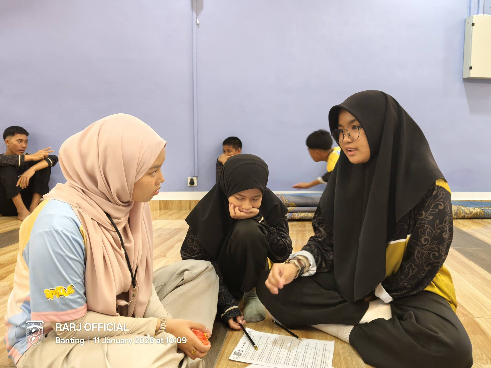
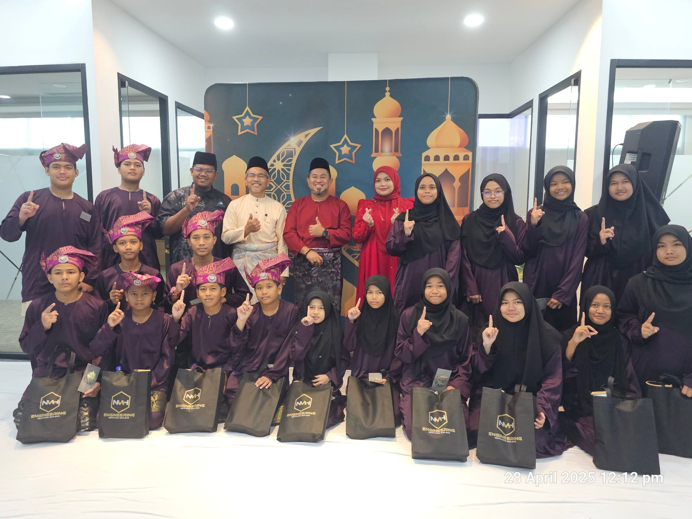
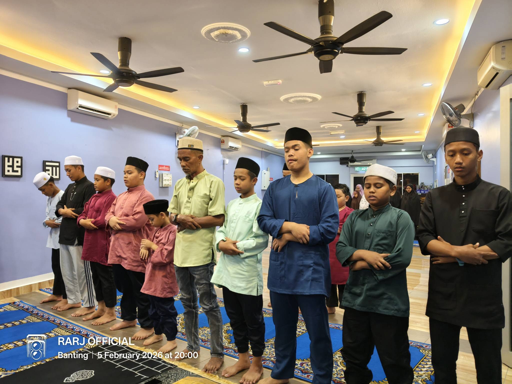

Education Support
Study guidance, homework support, reading activities, and preparation for school routines can be highlighted if confirmed by the organization.
Program Overview
This page presents activity categories that may be included in the final website after verification. The purpose is to show potential donors and visitors how the home supports children beyond basic shelter.
Do not claim exact event names, dates, achievements, or visitor organizations unless the information is confirmed. A made-up achievement section is not creativity. It is academic self-sabotage wearing a nice font.
Main Activities

Study guidance, homework support, reading activities, and preparation for school routines can be highlighted if confirmed by the organization.

Public visits, donation handovers, and group welfare programs can help build stronger relationships between the home and local community.

Daily routines may include meals, cleaning, personal care, prayer or moral guidance, and structured rest time depending on the home's actual schedule.
Daily Routine
Children prepare for school, breakfast, hygiene, and daily responsibilities.
After school, children may have lunch, rest, and supervised personal time.
Homework, reading, moral guidance, religious classes, or recreational activities may be arranged.
Visits, donations, cleaning programs, celebrations, or volunteer activities may take place after approval.
Thumbnail Gallery
Replace these edited sample images with approved photos from the organization. Use images that respect privacy, dignity, and consent.


{kind=link}
{kind=link}